8. Complex Numbers¶
Certain portions of these chapter require facts from other parts like determinants, equations tec. Student is encouraged to look ahead into these chapters for referenced results/equations used.
8.1. Imaginary Numbers¶
By definition a complex number has two components. A real part and an imaginary part. Now since we have not studied anything about imaginary numbers let us study them first. An imaginary number is a number which is imaginary. Err! What I mean is in practice you cannot have physical representation of those quantities. Square root of negative numbers are called imaginary numbers. For example,
We denote \(\sqrt{-1}\) with the Greek symbol \(i\), which stands for iota.
Clearly, we have the following:
If you examine carefully you will find that following holds true:
\(P\) is the set of positive numbers inclduing zero. Proof of the above one is simple and therefore left as an exercise to reader.
Gotcha
Consider the following:
However, the above result is wrong. The reason being is that for any two real numbers \(a\) and \(b\) \(\sqrt{a}*\sqrt{b}=\sqrt{ab}\) holds good if and only if the two numbers are either zero or positive.
8.2. Problems¶
Evaluate:
\(i^5\)
\(i^5=i^2*i^2*i=-1*-1*i=i\)
\(i^{67}\)
\(i^{64}*i^2*i=-i\)
\(i^{-49}\)
\(\frac{1}{i^{48}i}=\frac{1}{i}=i^3\)
Prove that \(i^n+i^{n+1}+i^{n+2}+i^{n+3}=0\).
\(i^n(1+i+i^2+i^3)=i^n(1+i-1-i)=0\)
8.4. Simple Operations¶
8.4.1. Addition¶
\((a+ib)+(c+id)=(a+c)+i(b+d)\)
8.4.2. Subtraction¶
\((a+ib)-(c+id)=(a-c)+i(b-d)\)
8.4.3. Multiplication¶
\((a+ib)*(c+id)=ac+ibc+iad+bdi^2=(ac-bd)+i(bc+ad)\)
8.4.4. Division¶
The complex number in denominator must not have both parts as zero. At least one part must be non-zero.
8.5. Conjugate of a Complex Number¶
Let \(z=x+iy\) be a complex number then its complex conjugate is a number with imaginary part made negative and it is written as \(\bar{z}=x-iy\). \(\bar{z}\) is the typical representation for a conjugate of a complex number \(z\).
8.5.1. Properties of Conjugates¶
\(z_1=z_2\Leftrightarrow \bar{z_1}=\bar{z_2}\).
Clearly as we know for two complex numbers toi be equal both parts must be equal so this is very easy to understand that if \(x_1=x_2\) and \(y_1=y_2\) then this bidirection consition is always satisfied.
\(\overline{(\bar{z})}=z\).
\(z=x+iy\), hence, \(\bar{z}=x-iy\), hence, \(\overline{(\bar{z})}=x-(-iy)=x+iy=z\).
\(z+\bar{z}=2Re(z)\).
Clearly, \(z+\bar{z}=x+iy+x-iy=2x=2Re(z)\).
\(z-\bar{z}=2iIm(z)\).
Clearly, \(z-\bar{z}=x+iy-(x-iy)=2iy=2iIm(z)\).
\(z=\bar{z}\Leftrightarrow z\) is purely real.
Clearly, \(x+iy=x-iy \implies 2iy=0 \implies y=0\). Therefore, \(z\) is purely real. Conversely if \(z\) is purely real then \(z=x\) therefore \(z=\bar{z}\).
\(z+\bar{z}=0\Leftrightarrow z\) is purely imaginary.
It can be proven like previous point.
\(z\bar{z}=[Re(z)]^2+[Im(z)]^2\).
Clearly, \(z\bar{z}=(x+iy)(x-iy)=(x^2+y^2)=[Re(z)]^2+[Im(z)]^2\).
\(\overline{z_1+z_2}=\overline{z_1}+\overline{z_2}\).
Clearly, \(\overline{z_1+z_2}=\overline{(x_1+iy_1)+(x_2+iy_2)}\) i.e. \(\overline{(x_1+x_2)+i(y_1+y_2)}=(x_1+x_2)-i(y-1+y_2)\) i.e. \((x_1-iy_1)+(x_2-iy_2)=\overline{z_1}+\overline{z_2}\).
\(\overline{z_1-z_2}=\overline{z_1}-\overline{z_2}\).
It can be proven in the same fashion as 8 and left to the student.
\(\overline{z_1 z_2}=\overline{z_1}~\overline{z_2}\).
It can be proven in the same fashion as 8 and left to the student.
If you rationalize the base by multiplying it from its conjugate and apply division formula give above it can be easily proven hence left as an exercise.
- If \(P(z)=a_0+a_1z+a_1z^2+...+a_nz^n\) where \(a_0, a_1,...,a_n\) and \(z\) are complex number, then
where
13. If \(R(z)=\frac{P(z)}{Q(z)}\) where P(a) and Q(z) are polynomials in z, and \(Q(z)\neq 0,\) then
- If
where \(a_i, b_i, c_i (i=1, 2, 3)\) are complex numbers. To prove this you need to understand determinants.
8.6. Modulus of a Complex Number¶
Modulus of a complex number \(z\) is denoted by \(|z|\) and is equal to the real number \(\sqrt{x^2+y^2}\). Note that \(|z|\geq~0~\forall~z\in C\).
8.6.1. Properties of Modulus¶
\(|z|=0 \Leftrightarrow z=0\).
Clearly, this means \(x^2+y^2=0 \implies x=0 \text{ and } y=0 \implies z=0\).
\(|z|=|\bar{z}|=|-z|=|-\bar{z}|\).
Clearly, all result in to \(x^2+y^2\).
\(-|z|\leq Re(z)\leq |z|\).
Clearly, \(-(x^2+y^2)\leq x^2\leq (x^2+y^2)\).
\(-|z|\leq Im(z)\leq |z|\).
Clearly, \(-(x^2+y^2)\leq y^2\leq (x^2+y^2)\).
\(z\bar{z}=|z|^2\).
Clearly, \((x+iy)(x-iy)=x^2+y^2=|z|^2\).
Following relations are very easy and can be proved by the student. If \(z_1\) and \(z_2\) are two complex numbers then,
\(|z_1 z_2|=|z_1||z_2|\).
Clearly, \(|z_1 z_2|=|x_1x_2-y_1y_2+i(x_1y_2+x_2y_1)|\) i.e. \(\sqrt{(x_1x_2-y_1y_2)^2+(x_1y_2+x_2y_2)^2}\) i.e. \(\sqrt{(x_1+y_1)^2(x_2+y_2)^2}=|z_1||z_2|\).
- \[\left|\frac{z_1}{z_2}\right|=\frac{|z_1|}{z_2}, \text{ if } z_2\neq 0.\]
\(|z_1+z_2|^2=|z_1|^2+|z_2|^2+\overline{z_1}z_2+z_1\overline{z_2}\) i.e. \(|z_1|^2+|z_2|^2+2Re(z_1\overline{z_2})\).
\(|z_1-z_2|^2=|z_1|^2+|z_2|^2-\overline{z_1}z_2-z_1\overline{z_2}\) i.e. \(|z_1|^2+|z_2|^2-2Re(z_1\overline{z_2})\).
\(|z_1+z_2|^2+|z_1-z_2|^2=2(|z_1|^2+|z_2|^2)\).
If \(a\) and \(b\) are real numbers and \(z_1\) and \(z_2\) are complex numbers, then
\(|az_1+bz_2|^2+|bz_1-az_2|^2=(a^2+b^2)(|z_1|^2+|z_2|^2)\)
If \(z_1, z_2 \neq 0\), then \(|z1+z2|^2=|z_1|^2+|z_2|^2\Leftrightarrow \frac{z_1}{z_1}\) is purely imaginary.
If \(z_1\) and \(z_2\) are complex numbers then \(|z_1+z_2|\leq|z_1|+|z_2|.\) This inequality can be generalized also.
Similarly, these can also be proven that \(|z_1-z_2|\leq|z_1|+|z_2|,\) \(||z_1|-|z_2||\leq|z_1|+|z_2|\) and \(|z_1-z_2|\geq||z_1|-|z_2||.\)
8.7. Geometrical Representation¶
A complex number z which we have considered to be equal to x+iy in our previous representations can be represented by a point P whose Cartesian co-ordinates are (x,y) referred to rectangular axes Ox and Oy where O is origin i.e. (0, 0) and are called real and imaginary axes respectively. The xy two-dimensional plane is also called Argand plane, complex plane or Gaussian plane. The point P is also called the image of the complex number and z is also called the affix or complex co-ordinate of point P.
Now as you can easily figure out that all real numbers will lie on real axis and all imaginary numbers will lie onimaginary axis as their counterparts will be zero.
The modulus is given by the length of segment OP which is equal to \(OP=\sqrt{x^2+y^2} = |z|.\) This, \(|z|\) is the length of the OP. Given below is the graphical representation of the complex number.
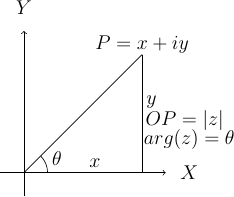
Complex number in argand plane or complex plane
In the above diagram \(\theta\) is known as the argument of z. This is nothing but angle made with positive direction (i.e. counter-clockwise) of real axis. Now thie argument is not unique. If \(\theta\) is an argument of a complex number z then \(2n\pi+\theta\) where \(n\in I\) where I is the set of integerts. The value of argument for which \(-\pi<\theta\leq\pi\) is called the principal value of argument or principal argument.
8.7.1. Different Arguments of a Complex Number¶
In the diagram given above the argument is given as
this value is for when z is in first quadrant.
When z will lie in second, third and fourth quadrants then arguments will be
repectively.
8.7.2. Polar Form of a Complex Number¶
If z is a non-zero complex number, then we can write \(z=r(cos\theta + isin\theta)\) where \(r=|z|\text{ and }\theta=arg(z).\)
In this case z is also given by \(z=r(cos(2n\pi+\theta)+i~sin(2n\pi+\theta))\) where \(n\in I.\)
8.7.2.1. Euler’s Formula¶
The complex number \(cos\theta+i~sin\theta\) is denoted by \(e^{i\theta}\) or \(cis~\theta.\)
8.7.3. Important Results Involving Arguments¶
If \(z, z_1 \text{ and } z_2\) are complex numbers then
1. \(arg(\overline{(z)}) = arg(z)\). This can be easily proven as if \(z=x+iy\) then \(\overline{z}=x-iy\) i.e. sign of argument will get a -ve sign as y gets one.
- \(arg(z_1z_2)=arg(z-1)+arg(z_1)+2n\pi\) where
- Similarly, \(arg(z_1, \overline{z_2})=arg(z_1)-arg(z_2)\)
- \(arg\left(\frac{z_1}{z_2}\right)=arg(z_1)+arg(z_2)+2n\pi\)
- \(|z_1+z_2|=|z_1-z_2|\Leftrightarrow arg(z_1)-arg(z_2)=\pi/2\)
- \(|z_1+z_2|=|z_1|+|z_2|\Leftrightarrow arg(z_1)=arg(z_2)\)
- \(|z_1+z_2|^2 = r_1^2+r_2^2+2r_1r_2cos(\theta_1-\theta_2)\)
- \(|z_1-z_2|^2 = r_1^2+r_2^2+2r_1r_2cos(\theta_1+\theta_2)\)
8.8. Vector Representation¶
Complex numbers can also be represented as vectors. Length of the vector is nothing bu modulus of complex number and argument is the angle which the vector makes with read axis. It is denoted as \(\overrightarrow{OP}\) where \(OP\) represents the vector of the complex number z.
8.9. Algebraic Operation’s Representation¶
Let \(z_1=x_1+iy_1\) and \(x_2+iy_2\) be two complex numbers which are represented by two points \(P1\) and \(P2\) in the following diagrams.
8.9.1. Addition¶
Now as we know that \(z_1+z_2 = (x_1+x_2)+i(y_1+y-2).\) Let us try to achive this through geometrical means.
![\draw[->, >=stealth] (-.5,0) -- (5.5,0);
\draw[->, >=stealth] (0,-.5) -- (0,5.5);
\draw (5.7, 0) node {$X$};
\draw (0,5.7) node {$Y$};
\draw (0,0) -- (4,1);
\draw (0,0) -- (1,4);
\draw (1,4) -- (5,5);
\draw (4,1) -- (5,5);
\draw[dashed] (4,1) -- (4,0);
\draw[dashed] (1,4) -- (1,0);
\draw[dashed] (5,5) -- (5,0);
\draw[dashed] (4,1) -- (5,1);
\draw (-.5,-.5) node {$O$};
\draw (1,-.5) node {$L$};
\draw (4,-.5) node {$M$};
\draw (5,-.5) node {$N$};
\draw (5.2,1) node {$K$};
\draw (3, 1.2) node {$P1(x_1+iy_1)$};
\draw (1.3, 4.3) node {$P2(x_2+iy_2)$};
\draw (5, 5.2) node {$P(x+iy)$};](../_images/tikz-43d122e3a509f35f940151e64215373cb723282b.png)
Complex number addition
Let us have \(P_2L, P_1M \text{ and } P_N\) perpendiculars from \(P_2, P_1 \text{ and } P\) respectively on x axis. Draw \(P_1K\) perpendicular to \(PN\). Note that triangles \(OP_2L\) and \(P_1P_2K\) are congruent. Very simple analysis will result in the fact that
8.9.2. Subtraction¶
TO subtract we will have to make \(P_2\) rotate by \(180^\circ .\) Now this means that in prebious diagram it will fall in third quadrant and then again it can be proven that
Similarly diagrams for multiplication and division can also be obtained and is left as an exercise.
For multiplication length or modulus of product is product of two modulii and argument is sum of arguments. For division modulus is division and argument is subtraction of two arguments. This implies
and
8.9.3. Three Important Results¶
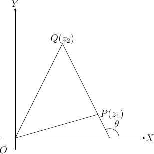
\(z_1-z_2=\overrightarrow{OP}-\overrightarrow{OQ}=\overrightarrow{QP}\)
\(\therefore |z_1-z_2|=|\overrightarrow{QP}|=QP,\) which is nothing but distance between points P and Q which are nothing but representation of complex numbers \(z_1\) and \(z_2.\)
\(arg(z_1-z_2)\) is the angle which \(\overrightarrow{QP}\) makes with positive direction of x-axis being denoted by \(\theta.\)
![\draw[->, >=stealth] (-1.5,0) -- (5.5,0);
\draw[->, >=stealth] (0,-.5) -- (0,5.5);
\draw (5.7, 0) node {$X$};
\draw (0,5.7) node {$Y$};
\draw (-.5,-.5) node {$O$};
\draw[dashed] (1,0) -- (2,2);
\draw[dashed] (-1,0) -- (2,2);
\draw[->, >=stealth] (2,2) -- (3,4);
\draw[->, >=stealth] (2,2) -- (3.5,3);
\draw (-0.6,0) arc(0:33.69:4mm);
\draw (1.4,0) arc(0:63.43:4mm);
\draw (2.4,2.7) arc(63.43:13.69:4mm);
\draw (-.2, 0.2) node{$\beta$};
\draw (1.8, 0.2) node{$\alpha$};
\draw (2.8,2.8) node{$\theta$};
\draw (2.6,1.8) node{$P(z_1)$};
\draw (3.2, 4.2) node{$Q(z_2)$};
\draw (3.7,3.2) node{$R(z_3)$};](../_images/tikz-d4466462bd444e7e2393e5a8e2d0ae70ca81d4d1.png)
\(\theta=\alpha-\beta=arg(z_3-z_1)-arg(z_2-z_1)\)
Similarly if three complex numbers are vertices of a triangle then angles of those vertices can also be computed using previous results.
Similarly, for four points to be concyclic where those points are represented by \(z_1, z_2, z_3 \text{ and } z_4\) if
Note that these complex numbers are in either clockwise or counter-clockwise order as vertices of the quadrilateral.
8.10. More Roots¶
8.10.1. Any Root of an Imaginary Number is an Imaginary Number¶
Let \(x+iy\) be an imaginary number, where \(y\neq 0\)
Let \((x+iy)^n=a, \therefore x+iy = a^n\)
Now if \(a\) is real \(a^n\) will also be real but from above an imaginary number \(x+iy\) is equal to a real number \(a^n\) which is not posiible. Hence, a must be imaginary.
8.10.2. Square Root of a Complex Number¶
Consider a complex number \(z=x+iy\) then let us say
Equating real and imaginary parts
then we can write
From two equations written above we have
Thus, we can deduce our complex number.
8.10.3. Cube Roots of Unity¶
Let \(x=x^{\frac{1}{3}}\), then \(x^3-1=0.\)
\(\Rightarrow~(x-1)+(x^2+x+1)=0\)
So the three roots are \(x=1, x=\frac{-1\pm \sqrt{-3}}{2}\) i.e. \(1, \frac{-1+i\sqrt{3}}{2} \text{ and } \frac{-1-i\sqrt{3}}{2}.\)
It can be easily verified that if \(\omega=\frac{-1-i\sqrt{3}}{2}\) then \(\omega^2=\frac{-1+i\sqrt{3}}{2}\) thus three cube roots are represented as \(1, \omega \text{ and } \omega^2.\)
Similarly one of the properties is that \(1+\omega+\omega^2=0\) which can be verified also and product of all three is 1 i.e. \(\omega^3=1.\)
8.10.4. nth Root of Unity¶
Similarly as cube roots of unity it can be proven that
and
8.11. De Moivre’s Therorem¶
Statement: If \(n\) is any integer then \((cos\theta + isin\theta)^n=cosn\theta + isinn\theta\).
If \(n\) is any rational number then one of the values of \((cos\theta + isin\theta)^n=cosn\theta + isinn\theta\)
Proof:
Case I: When n is 0.
Clearly, \((cos\theta+isin\theta)^0=1\)
Case II: When n is a positive integer.
Clearly, \((cos\theta+isin\theta)^2=(cos^2\theta-sin^2\theta+i2cos\theta sin\theta)\)
= \(cos2\theta+isin2\theta\)
Similarly, \((cos\theta+isin\theta)^3=cos3\theta+isin3\theta\)
Similalrly, if for \(n-1\) we have
\((cos\theta+isin\theta)^{(n-1)} = cos(n-1)\theta+isin(n-1)\theta\) then it can be easily proven that
\((cos\theta+isin\theta)^n = cosn\theta+isinn\theta\)
It is left as an exercise to the reader to prove it for negative and fractional powers.
8.12. Some Important Geometrical Results and Equations¶
8.12.1. Section Formula¶
Let \(z_1=x_1+iy_1, z_2=x_2+iy_2\) then if \(z=z+iy\) which divides the previous two points in the ration \(m;n\) can be given by using the results from co-ordinate geometry as below:
Extending this section formula we can say that if there is a point which divides this line in two equal parts i.e. the point is mid-point then \(m = 1\) and \(n = 1\) then \(z\) is given by \(\frac{1}{2}(z_1 + z_2)\)
8.12.2. Distance Formula¶
Distance betwenn \(A(z_1)\) and \(B(z_2)\) is given by \(AB = |z_1 + z_2|\)
8.12.3. Equation of a Line Passing Through Two Points¶
The equation between two point \(z_1\) and \(z_2\) is given by the determinant
or,
Please refer to determinants section and co-ordinate geomtry books on how to establish this result.
The proof is left as an exercise to the reader.
The parametric form is given by \(z = iz_1 + (1 - t)z_2\)
8.12.4. Collinear Points¶
Three points \(z_1, z_2 \text{ and } z_3\) are collinear if and only if
This follows from the formula for a line passing through two points. Just substitute \(z_3\) as a point in the equation to satisfy the equality.
8.12.5. Parrallelogram¶
Four complex numbers \(A(z_1), B(z_2), C(z_3)\) and \(D(z_4)\) represent the vertices of a parallelogram if \(z_1 + z_3 = z_2 + z_4.\)
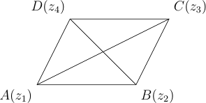
The diagonals \(AC\) and \(BD\) must bisect each other. Therefore,
8.12.6. Rhombus¶
Four complex numbers \(A(z_1), B(z_2), C(z_3)\) and \(D(z_4)\) represent the vertices of a rhombus if \(z_1 + z_3 = z_2 + z_4\) and \(|z_4 - z_1| = |z_2 - z_1|.\)
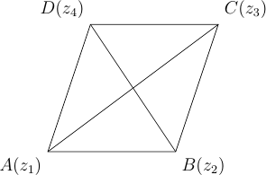
The diagonals \(AC\) and \(BD\) must bisect each other. Therefore,
Also, a pair of two adjacent sides are equal for example \(AD = AB\) thus second condition is also met i.e. \(|z_4 - z_1| = |z_2 - z_1\).
8.12.7. Square¶
Four complex numbers \(A(z_1), B(z_2), C(z_3)\) and \(D(z_4)\) represent the vertices of a square if \(z_1 + z_3 = z_2 + z_4, |z_4 - z_1| = |z_2 - z_1|\) and \(|z_3 - z_1| = |z_4 - z_2|.\)
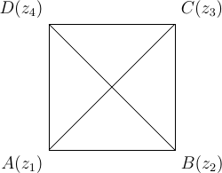
The diagonals \(AC\) and \(BD\) must bisect each other. Therefore,
Also, a pair of two adjacent sides are equal for example \(AD = AB\) thus second condition is also met i.e. \(|z_4 - z_1| = |z_2 - z_1\).
And the two diagonals are equal i.e. \(AC = BD\) i.e. \(|z_3 - z_1| = |z_4 - z_2|.\)
8.12.8. Rectangle¶
Four complex numbers \(A(z_1), B(z_2), C(z_3)\) and \(D(z_4)\) represent the vertices of a rectangle if \(z_1 + z_3 = z_2 + z_4, |z_4 - z_1|\) and \(|z_3 - z_1| = |z_4 - z_2|.\)
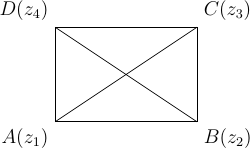
Similar to above examples the diagonals bisect each other. Also, the diagonals \(AC\) and \(BD\) should be equal.
8.12.9. Centroid of a Triangle¶
Let \(A(z_1), B(z_2)\) and \(C(z_3)\) be the vertices of a \(\triangle ABC.\)
Centroid \(G(z)\) of the \(\triangle ABC\) is the point of concurrence of the medians of all three sides and is given by
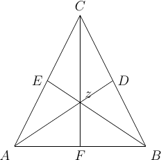
8.12.10. Incenter of a Triangle¶
Let \(A(z_1), B(z_2)\) and \(C(z_3)\) be the vertices of a \(\triangle ABC.\)
Incenter \(I(z)\) of the \(triangle ABC\) is the point of concurrence of internal bisectors of all the angles and is given by
where \(a, b\) and \(c\) are the lengths of the sides.
![\draw (-2, 0) -- (2, 0) (-2, 0) node[anchor = north east] {$A$};
\draw (2, 0) -- (0, 4) (2, 0) node[anchor = north west] {$B$};
\draw (-2, 0) -- (0, 4) (0, 4) node[anchor = south] {$C$};
\draw (2, 0) -- (-1, 2) (-1, 2) node[anchor = east] {$E$};
\draw (0, 4) -- (0, 0) (0, 0) node[anchor = north] {$F$};
\draw (-2, 0) -- (1, 2) (1, 2) node[anchor = west] {$D$};
\draw (0, 1.33) node[anchor= south west] {$z$};
\draw (-1.7, 0) arc(0:30:3mm);
\draw (-1.5, 0) arc(0:30:5mm);
\draw (-1.6, .3) arc(30:60:4mm);
\draw (-1.45, .4) arc(30:60:6mm);
\draw (1.85, .26) arc(120:150:3mm);
\draw (1.8, .433) arc(120:150:5mm);
\draw (1.65, .2) arc(150:180:4mm);
\draw (1.48, .3) arc(150:180:6mm);
\draw (-.15, 3.7) arc(240:270:3mm);
\draw (-.25, 3.5) arc(240:270:5mm);
\draw (0, 3.6) arc(270:300:4mm);
\draw (0, 3.35) arc(270:300:6mm);](../_images/tikz-ebf6fa8b16ce85ff0f8e46dfaad7d6dc7bdca7aa.png)
8.12.11. Circumcenter of a Triangle¶
The circumcenter \(S(z)\) of the \(\triangle ABC\) is the concurrence of perpendicular bisectors of sides of \(\triangle ABC\) and is given by
Also,
8.12.12. Orthocenter of a Triangle¶
The orthocenter \(H(z)\) of the \(\triangle ABC\) is the concurrence of altitudes of \(\triangle ABC\) and is given by
8.12.13. Euler’s Line¶
The centroid \(G\) of a triangle lies on the segment joining the orthocenter \(H\) and the circumcenter \(S\) of the triangle. \(G\) divides the line \(H\) and \(S\) in the ratio \(2:1.\)
8.12.14. Length of Perpendicular from a Point to a Line¶
Length of a perpendicular of point \(A(\omega)\) from the line \(\overline{a}z + a\overline{z} + b = 0 (a \in \mathbf{C}, b \in \mathbf{R})\) is given by
8.12.15. Equation of a Circle¶
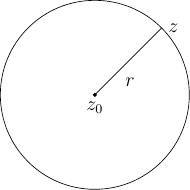
The equation of a circle with center at \(z_0\) and radius \(r\) is \(|z - z_0| = r\) or \(z = z_0 + re^{i\theta}, 0 \le \theta \le 2\pi\) (parametric form) or \(z\overline{z} - z_0\overline{z} - \overline{z_0}z + z_0\overline{z_0} - r^2 = 0\)
General equation of a circle is \(z\overline{z} - a\overline{z} + \overline{a}z + b = 0\) where \(a\) is a complex number and \(b\) is a real number such that \(\sqrt{a\overline{a} - b} \ge 0.\) Center of this circle is \(-a\) and its radius is \(a\overline{a} - b.\)
An equation of the circle one of whose diameter is the line segment joining \(z_1\) and \(z_2\) is \((z - z_1)(\overline{z} - \overline{z_2}) + (\overline{z} - \overline{z_1})(z - z_2) = 0\)
An equation of the circle passing through two points \(z_1\) and \(z_2\) is given by
where \(k\) is a parameter.
Let us find out equation of a circle passing through three non-collinear points. Let \(A(z_1), B(z_1)\) and \(C(z_3)\) be such three points.
![\draw (0,0) circle(2);
\draw (1.414, -1.414) -- (1.414, 1.414);
\draw (1.414, -1.414) -- (-1.414, 1.414);
\draw[dashed] (1.414, -1.414) -- (0, -2);
\draw (-1.414, -1.414) -- (1.414, 1.414);
\draw (-1.414, -1.414) -- (-1.414, 1.414);
\draw[dashed] (-1.414, -1.414) -- (0, -2);
\draw (1.414, 1.414) node[anchor=south west] {$C(z_3)$};
\draw (-1.414, 1.414) node[anchor=south east] {$P(z)$};
\draw (-1.414, -1.414) node[anchor=north east] {$A(z_1)$};
\draw (0, -2) node[anchor=north] {$P(z)$};
\draw (1.414, -1.414) node[anchor=north west] {$B(z_2)$};](../_images/tikz-1aa0d9b4de4217ad94760d3fc3575c45595b7eef.png)
We choose \(P(z)\) any point on the circle. Two such points are shown in the figure one when it is in the same segment and other when it is in different segment.
So we have,
as when \(P\) is in same segment of different.
So in both the cases the fraction must be purely real. This menas
which can be further simplified.
From this we can also deduce the condition for four points to be concyclic. Treating \(P(z)\) as just a another point \(D(z_4)\) we can rewrite the above result as
must be purely real.
8.12.16. Finding Loci by Examination¶
\(arg(z - z_0) = \alpha\)
If \(\alpha\) is a real number and \(z_0\) is a fixed point, then \(arg(z - z_0) = \alpha\) represents a verctor starting at \(z_0\) (exclusing the point \(z_0\)) and making an angle \(\alpha\) with the real \(x\)-axis.
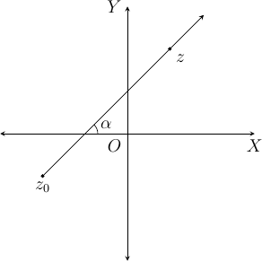
Now suppose \(z_0\) is origin \(O\) then the above equation becomes \(arg(z) = \alpha\) which is a vector starting at origin and making an angle \(\alpha\) with the \(x\)-axis.
If \(z_1\) and \(z_2\) are two fixed points such that \(|z - z_1| = |z - z_2|\) then \(z\) represents perpendicular bisector of the segment joining \(A(z_1)\) and \(B(z_2).\) And, \(z, z_1\) and \(z_2\) will form an isosceles triangle.
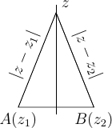
If \(z_1\) and \(z_2\) are two fixed points and \(k > 0, k \ne 1\) is a real number, then
\[\frac{|z - z_1|}{|z - z_2|} = k\]represents a circle.
\(|z - z_1| + |z - z_2| = k.\) Let \(z_1\) and \(z_2\) be two fixed points and \(k\) be a positive real number.
If \(k > |z - z_2|,\) then \(|z - z_1| + |z - z_2| = k\) represents an ellipse with foci at \(A(z_1)\) and \(B(z_2)\) and length of major axis = \(k.\)
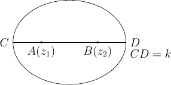
If \(k = |z - z_2|\) then it represents the line segment joining \(z_1\) and \(z_2.\)
If \(k < |z - z_2|\) then it does not represent any curve in Argand plane.
If \(|z - z_1| - |z - z_2| = k.\) Let \(z_1\) and \(z_2\) be two fixed points and \(k\) be a positive real number.
If \(k \ne |z - z_2|\) then it represents a parabola with foci at \(A(z_1)\) and \(B(z_2).\)
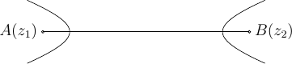
If \(k = |z_1 - z_2|,\) then it represents the straight line joining \(A(z_1)\) and \(B(z_2)\) but excluding the the segment \(AB.\)
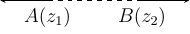
\(|z - z_1|^2 + |z - z_2|^2 = |z_1 - z_2|^2\). If \(z_1\) and \(z_2\) are two fixed points then it represents a circle with \(z_1\) and \(z_2\) as the end-points of one of the diameters.
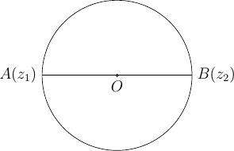
\(arg\left(\frac{z - z_1}{z - z_2} = \alpha\right)\). Let \(z_1\) and \(z_1\) be any two fixed points and \(\alpha\) be a real number such that \(0 \ge \alpha \le \pi.\)
If \(0 < \alpha < \pi\) and \(\alpha \ne \pi/2,\) then it represents a segment of a circle passing through \(A(z_1)\) and \(B(z_2).\)
![\draw (0, 0) circle(2);
\draw (-1.414, -1.414) -- (1.414, -1.414);
\draw (-1.414, -1.414) -- (1.414, 1.414) (1.414, -1.414) -- (1.414,
1.414);
\draw (1.414, 1.114) arc(270:225:.3);
\draw (-1.414, -1.414) node[anchor=north east] {$A(z_1)$} (1.414,
-1.414) node[anchor=north west] {$B(z_2)$};
\draw (1.214, 1.114) node[anchor=north] {$\alpha$};](../_images/tikz-767543f055612a17907bfb965022ed5d4cbf70a7.png)
If \(\alpha = \pi/2\) then it represents a circle with diameter as the line segment joining \(A(z_1)\) and \(B(z_2).\)
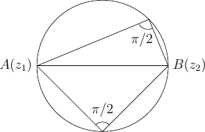
If \(\alpha = \pi\) then it represents the straight line joining \(A(z_1)\) and \(B(z_2)\) but excluding the segment \(AB.\)
If \(\alpha = 0\) then it represents the line segment joining \(A(z_1)\) and \(B(z_2).\)
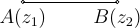
Problems are given as a separate chapter as MathJax may end up taking long time if too much math is present on same page.